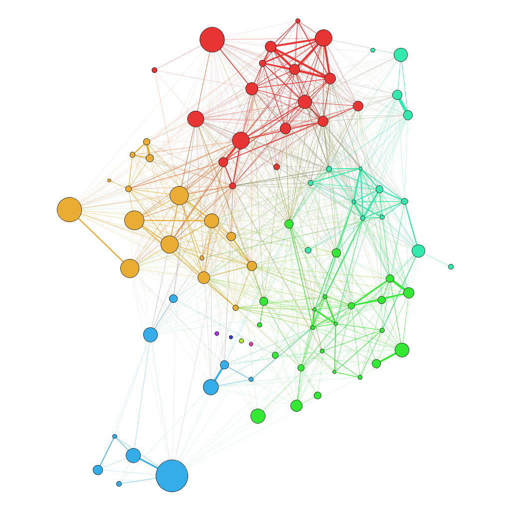

Demands to and Wishes for Future Scientific Publishing
Jun 1, 2014
The book will survive

...but new media calls for new publishing technology and policies
|
|
|


Modern publishing has many venues
Classical publishing venues:
books, journals, conference proceedings, local compendia
Modern publishing venues:
- books, journals, proceedings (need publisher)
- blog posts
- project websites at GitHub, Bitbucket, Figshare, Zenodo (w/DOI), ...
- (document sharing sites at latex-lab, Google docs, Draft, stackedit.io, ...)
- (Dropbox, Google Drive)
- promotion through Twitter, Google+, Facebook, ...
New venues also offer new publishing formats
- PDF (via LaTeX)
- HTML (via plain text, Sphinx, Markdown, Doconce, ...)
- Special e-book formats: epub, mobi, ... (PDF via Calibre)
- Interactive notebooks (via IPython notebook, Sage, Mathematica, ...)
- iBooks (via Apple's app)
Our special requirement:
Strong support for mathematics and computer code!
PDF is for paper, HTML for screen
|
My assertion:
PDF works on screens, but HTML is more appealing
and has much more functionality for science.
|
|
My conclusion: use generalized formats to write scientific material
- LaTeX has been the de facto standard format
- Conversion tools from LaTeX to HTML do not work well
- Solution: write in a more primitive format that easily converts to LaTeX, HTML, and whatever
- Doconce, Markdown, Sphinx, IPython notebooks, (Google Docs)
Note.
LaTeX (paper) and HTML (screen) apply different typography. Writing in a
simpler common format is different from classical LaTeX writing.
My scientific writings are converted to several formats
- Doconce source code
- PDF for printing
- PDF for screen
- HTML Sphinx CBC
- HTML Sphinx FEniCS
- HTML solarized
- HTML Bootstrap 1
- HTML Bootstrap 2
- Upcoming (?): IPython notebook, Google blog posts
Note.
HTML versions often have additional functionality (movies, embedded services,
multiple-choice tests).
Wishlist (part 1)
- Alternative formats of a book can be published (at Springer, GitHub, Zenodo, Figshare, ...)
- Springer stamps on all derived material with a link to the official book
- During production: share files with authors professionally (GitHub/Bitbucket)
Trend: from linear monograph to graph of smaller, more independent units
|

|
Next generation video: studix.com
- Classical video: series of frames of pixels
- studix.com video is a tree of objects rendered as a film in the browser
- Objects can be handwriting, graphs, videos, notebooks, slides, sound, links to other videos, books, ...
- Very enhanced video editing!
- Browser movies are tightly integrated with books and organized as a graph
More independent teaching units support more reuse
Add to wishlist:- Publish (modified) parts of a unit (from a book) online
- Always stamp derived material with link to the parent publication!
Fact today: publishers have no control of their copyright material
- Book chapters are easily found on the net as
- LaTeX PDF
- blog posts
- notebooks
- source files (on GitHub, Bitbucket, ...)
- No mentioning of the (final) book in these resources - I want to buy it!
Trend: visibility is key
Authors are researchers who need visibility, a big network, citations, and
a significant volume of material.
Young researchers
- use top journals and publishers to bring credibility
- use GitHub, Zenodo, Figshare, ... to display research
- use arXiv.org, ResearchGate, Mendeley, ... to exhibit papers
- use Twitter, Google+, Facebook, ... to announce new material
- use amazon.com (CreateSpace) independent publishing
Summary and wishlist
Assertions.
- Books must be available in more formats (PDF, HTML, epub, notebooks)
- The linear monograph will be a path in a graph of more independent units
Wishlist.
- Alternative formats of a book can be published (at Springer, GitHub, Zenodo, Figshare, ...)
- Publish (modified) parts of a unit (from a book) online
- Springer stamps on all derived material with a link to the official book
- During production: share files with authors professionally (GitHub/Bitbucket)